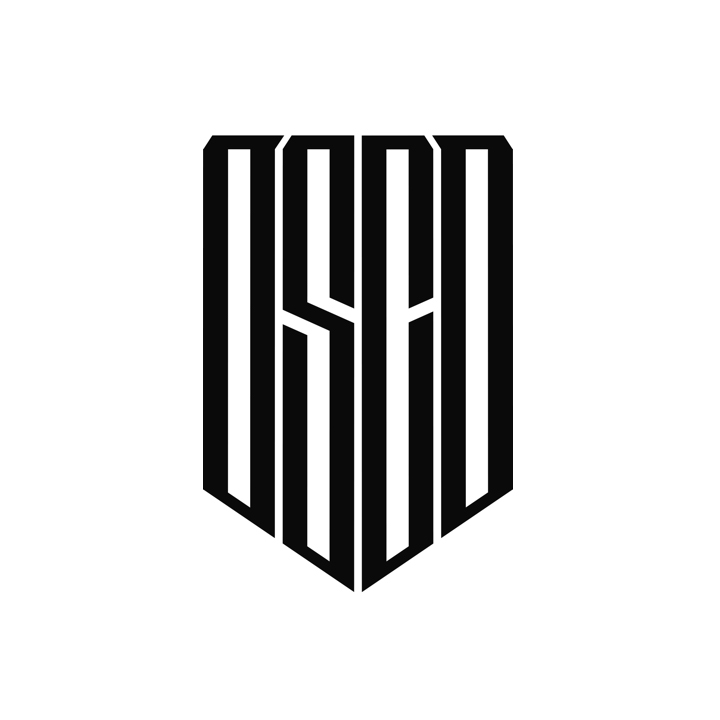

OSCD Sprint #1: Threat Detection
There is the Sigma Project — Generic Signature Format for SIEM Systems. It has a converter that generates searches/queries for different SIEM systems and a set of Detection Rules.
With time, Sigma project ruleset has become the biggest and the most mature community-driven Detection Rules set. This is the place where you could find Detection Rules for emerging threats (like BlueKeep exploits), adversary simulations tools (Empire, Cobalt Strike), adversary behaviors (Token stealing), and many more. Most of the rules are mapped to the MITRE ATT&CK.
Even if you are not using Sigma converter, you still can benefit from its ruleset. Most of the advanced security teams are subscribed to the Sigma Project updates on GitHub. It's a good time to do so if you haven't yet.
There are some gaps and issues in it, at the same time there is plenty of decent analytics published that haven't been added to Sigma Project repository. This is the thing we've decided to focus on.
Goals
- Improve MITRE ATT&CK coverage of open source Sigma rules- Push forward the culture of Sigma format use
The plan
1. Two weeks-long sprint starts October 21, 20192. Participants pick up tasks from the backlog or contribute other analytics
3. Development and testing will be done using community or personal laboratory
4. Participants use special guideline which will help to get familiar with the workflow
5. Results will be collected, reviewed and pushed to Sigma Project repository on GitHub
Results
- 144 new Sigma rules added- 19 existing rules improved
- two existing rules deprecated
Listing of the rules is available in the description of the Pull Request to Sigma repo.
Summary published on Medium (EN) and Habr (RU).